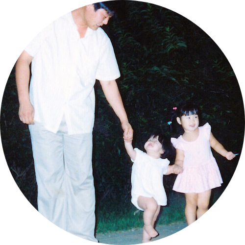

Fun Facts (You Never Knew You Needed)
- 🏔️ I spent my early childhood in Banff, Alberta — a tiny town nestled in the Canadian Rockies, full of elk, tourists, and accidental linguistic fieldwork. As the only ethnically Korean kid in my grade and surrounded by visitors speaking dozens of different languages, I became keenly aware of how language shapes the way we sound — a curiosity that now fuels my work as a linguist. (I also got very good at explaining Korea to confused classmates.)
- 🍓 Later on, most of my upbringing took place in BC’s Fraser Valley — aka the berry capital of Canada — where I spent my summers aspiring to become the fastest, most efficient berry picker west of the Rockies. I didn’t break any speed records, but I did eat a concerning number of blueberries on the job.
- 🗣️ Out of four siblings, I’m the only one who can fluently speak, read, write, and understand Korean. I never brag about it at family dinners... but I do feel a *quiet* sense of pride when I read academic linguistics papers in Korean like it’s no big deal.
- ⛸️ I’m a Canadian from the Rockies, but I have a confession: I’m *terrible* at ice skating, skiing, snowboarding, tobogganing… basically all winter sports. I’ve accepted that my true talents lie indoors — with language data and hot chocolate.
- 🦅 I have a deep love for Canadian Indigenous languages and include them in almost every course that I teach. They’re not only beautiful and complex, but also powerful vessels of culture, history, and resilience. And yes, I absolutely geek out over their rich consonant inventories, which often feature ejectives, uvulars, and fascinating contrasts like plain vs. glottalized vs. labialized voiceless plosives.
- ✈️ I didn’t own a passport until after undergrad. Turns out, you don’t really need one if you never leave the North American continent! I finally got my very first passport to study in Korea for my master’s, where I dove headfirst into the language, food, and culture that my parents grew up with.
- 🧸 Last but certainly not least, I’m a very proud aunt to the *cutest* nephew and niece. They only speak English (for now), yet somehow manage to understand all the Korean their grandparents throw at them — like tiny secret agents decoding grandparent code. Watching them acquire speech and language has been a linguist’s dream come true... basically live data collection, but with more snacks and cuter participants.